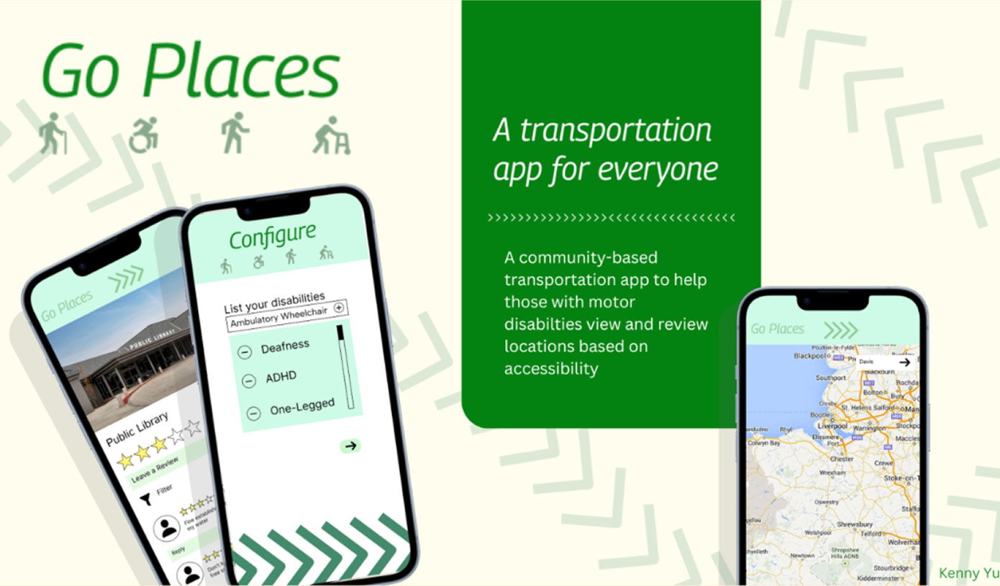
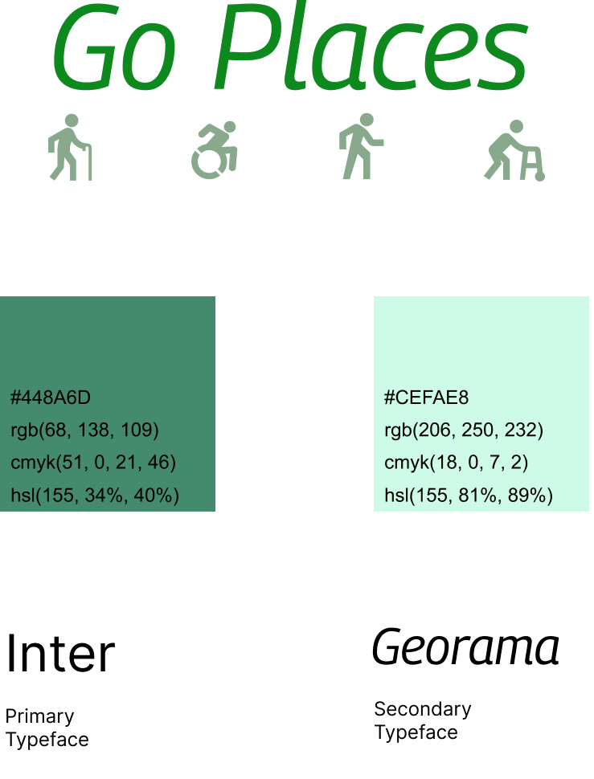
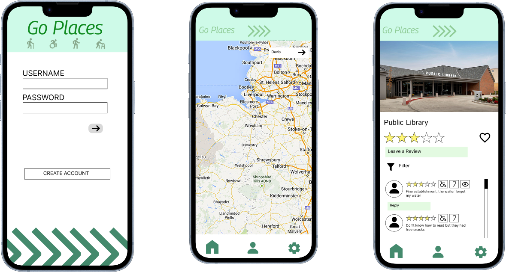

Go Places was the final project in the UI/UX Design course at UC Davis. The project consisted of creating a hypothetical app that addressed a social concern. Over the course of 4-5 weeks, I worked step by step through the user design flow iterating until I arrived at a final product.

Preliminary research showed me that nearly 1 in 7 people face mobility disabilities and information on the accessibility of locations is difficult to come across. That’s where Go Places comes in, using user-generated reviews of locations, users can find out exactly how accessible a location is to their specific disability.
It was important that the user felt motivated during the experience of using the app; too often, those with disabilities are infantilized and dehumanized. Therefore, one of the goals of the project was to return autonomy to them. The shades of green were meant to feel encouraging and spirited while the natural tilt in Georama felt like the text was heading somewhere too.

When designing the display for the phone version of the app, I took the audiences' potential vision impairment into mind and used contrasting colors and large fonts. This also makes the app more accessible to an older audience.
Go Places was a welcome into the world of UI/UX Design along with the processes of iteration and refinement. I learned how to create mockups using tools such as illustrator and interactive design flows through Figma. This project also opened my eyes to the world of social design and the role designers place in creating a more equitable accessible world.
View the final prototype